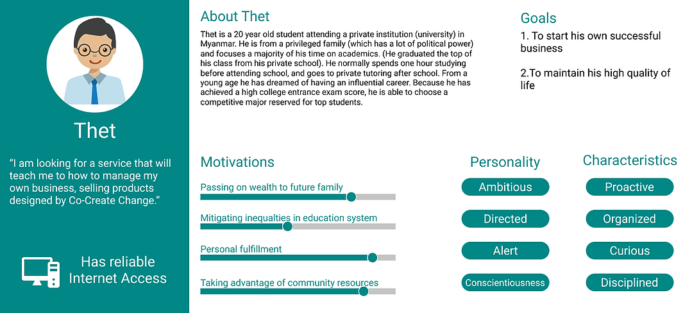
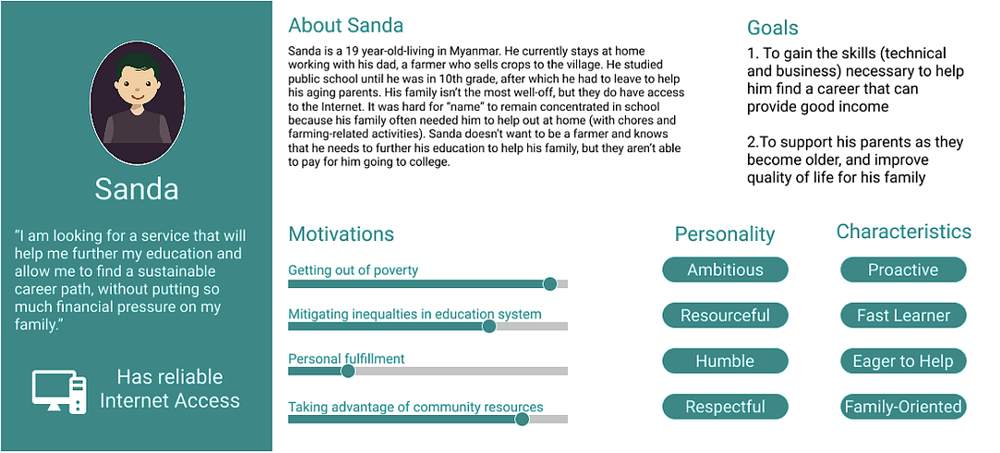

Co-Create Change is a student run non-profit organization from UC San Diego with the purpose of helping the
Myanmar community. They mainly focus on Myanmar education and want to promote socially just economic
development in the community. The team I was worked with had the chance to partner with them by designing
the framework for their digital learning platform. Co-Create Change aims to address educational
inequalities by promoting local entrepreneurship. They wanted to accomplish this through promoting local
entrepreneurship to serve as a communication and collaboration tool used to teach technical and business
skills, and facilitate entrepreneurial ventures. Overall, Co-Create hopes that the this platform will lead
college-aged students to start sustainable small businesses around renewable energy technology.
User Interviews
We had Ana, who was the liaison for Co-Create Change, work with us throughout the quarter to design the
digital learning platform. She was the first person we had an interview with and she was able to help us
gain some knowledge about who we were designing for. We were able to learn about some of Co-Create Change’s
past projects and their experiences working with the students in Myanmar.
Due to the language barriers and time zone differences, Co-Create Change helped us interview some of the
students in Myanmar. We learned that they had the technology such as computers and smartphones, but the
internet in Myanmar wasn’t reliable and would go out frequently. We also learned more about the education
system there and we wanted to create a solution that would work for all the villages across the country.
From what we learned about the student life and education in Myanmar, we created two personas which can be
seen below.


Ideation
When thinking about what content to include in the site, we thought that product tutorials would help
students understand the process of building products. The platform we had in mind was streamlined for the
students to navigate through the different ideas we wanted to include. One of the issues we wanted to
address most was how the students would work around the instability of the internet in Myanmar. Instead of
having the platform run mainly on WiFi, we wanted to allow the option for students to download the lessons
and tutorials that the platform would offer. Students would need to have access to internet in order to use
the site, but after downloading, they wouldn’t have to rely solely on the internet connection to learn
about entrepreneurship.
Prototyping
We wanted a way to combine all the ideas we had for the platform into one design, so we began creating a
prototype. Our tool of choice was Figma which was used for all of our iterations. The ideas we had for the
digital learning platform included a technical education, creating a business-oriented mindset, and the
ability to network. For us to accomplish this, we wanted to create a platform that would teach students
about entrepreneurship help them connect with local businesses under a website that all Myanmar students
could access. Our creation included sections for a variety of purposes to allow students to expand their
businesses.
User Testing
We had Ana as well as other students test our prototype to gain some valuable feedback. Our feedback was
limited with the amount of time the people we interviewed had but we were able to revise what we had from
what we heard. From the feedback we received, we heard that in order to help promote design thinking within
students, we should include a dedicated section to think ahead of our listed tutorials to grow even further
as businesses. The business planner we had was also recommended to be included as a feature within the
business section of the platform.